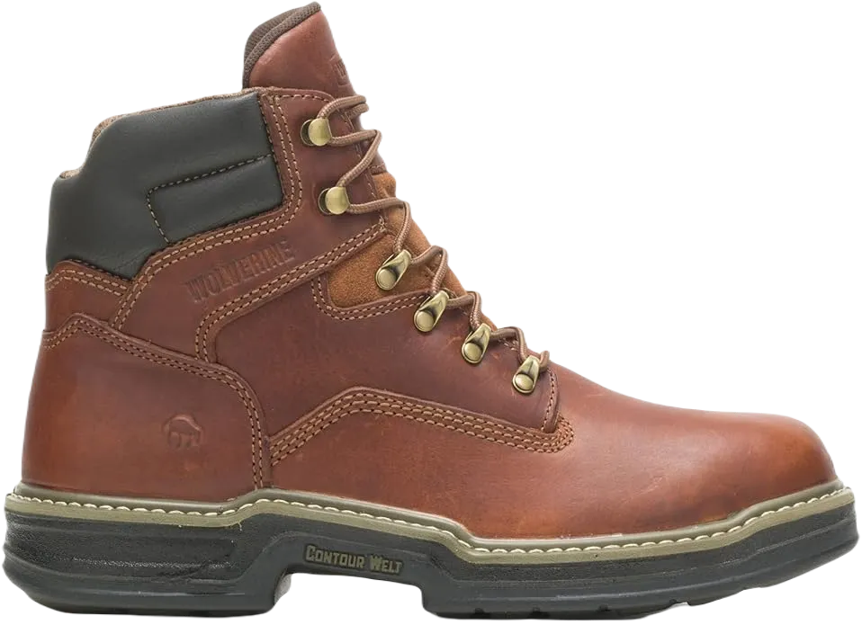
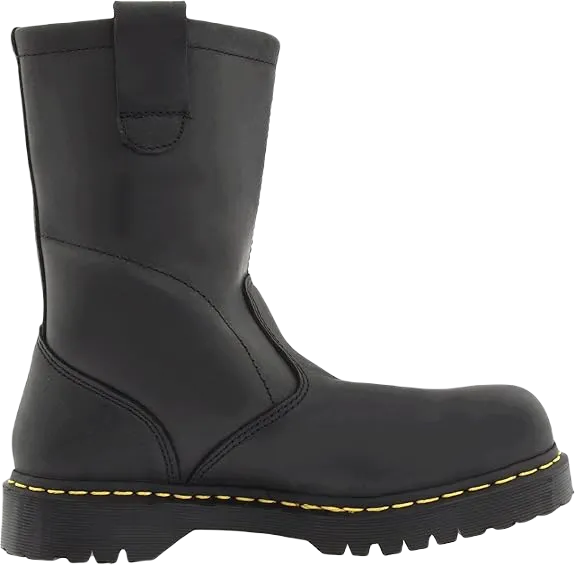
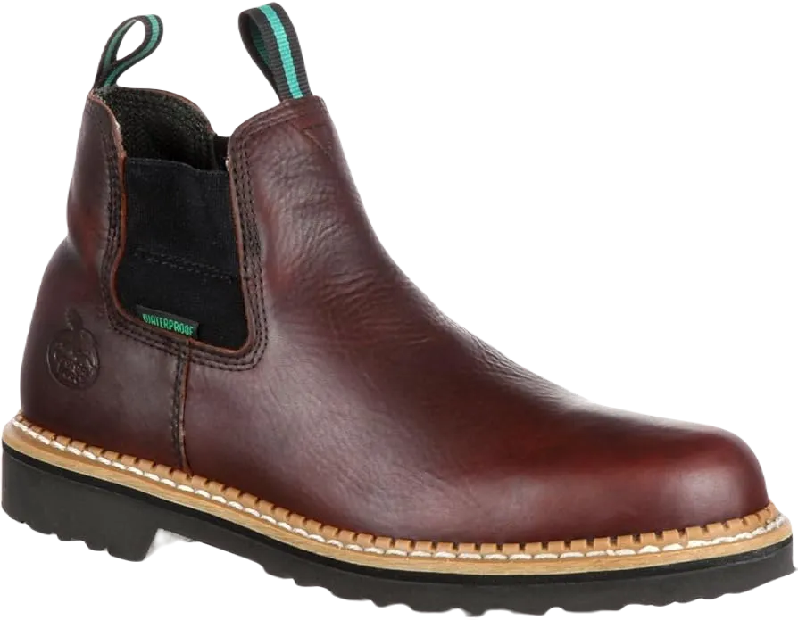
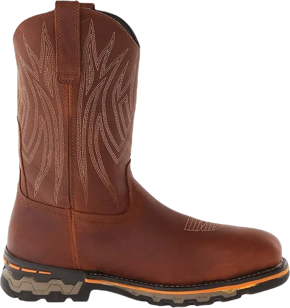
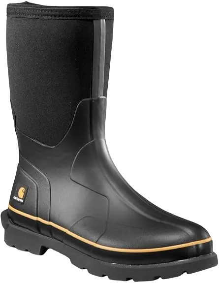
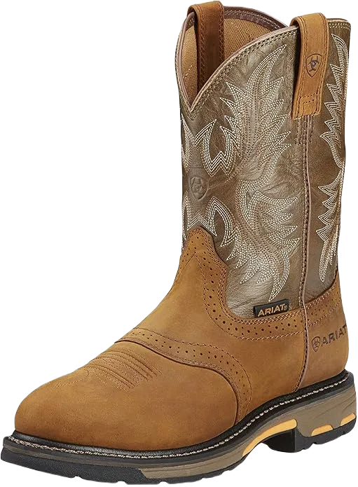
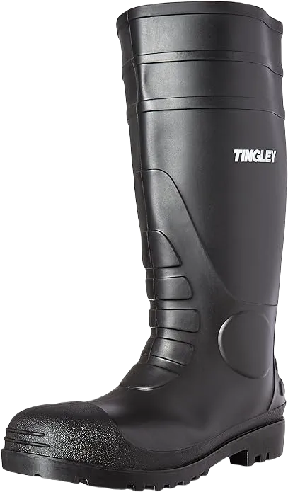
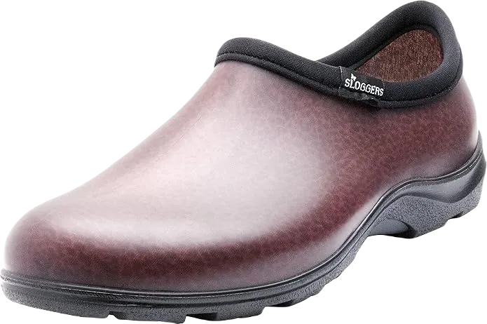

10 Most Comfortable Pull on Work Boots 2024
The most comfortable pull-on work boots are designed for easy slipping on while providing support to mitigate foot weaknesses. They typically have similar characteristics to traditional lace-up work boots, focusing on essential features such as material quality, craftsmanship, and toe protection options. After our brief introductory shopping guide, we will present you with a curated list of 10 pull-on work boots for you to review, compare, and explore.
These boots are crafted for both comfort and durability, making them suitable for various work environments. Whether you prioritize ease of use, support, or protection, our selection of pull-on work boots offers a range of choices to meet your needs.
-
#1
Caterpillar guys’ Revolver
.webp)
The Caterpillar Revolver boots undoubtedly rank among the finest slip-on work boots on the market, particularly when taking into account their impressive construction and stylish design. These boots feature a durable full-grain leather upper combined with a mid-calf silhouette, providing exceptional ankle support while significantly enhancing overall stability. However, it's worth noting that they may require a few days of wear to fully break in and achieve optimal comfort.
In addition to their sturdy build, the rubber soles of these boots offer crucial protection against electrical hazards, making them a safe choice for various work environments. They are also designed to be slip-resistant, which adds an extra layer of safety on slippery surfaces. However, one minor drawback is that dirt tends to accumulate around the heel area, which can be a bit inconvenient and may require more frequent cleaning.
On the downside, the metal-toe design could result in limited space within the toe box, potentially leading to some fitting issues for those with wider feet. This aspect may affect comfort during extended wear, so it's advisable to try them on to ensure a proper fit. -
#2
Wolverine men’s Raider Romeo
The Wolverine Men’s Raider boots are among the most comfortable slip-on work boots, providing enhanced support and extra cushioning. The Contour Welt is highly flexible, allowing your toes to move naturally, while the polyurethane padded sole is both lightweight and comfortable. The Raiders also feature rubber soles, although they can be quite slippery.
I particularly appreciate the wave network lining, which is breathable and lightweight, keeping the boots feeling fresh. The MultiShox footbeds provide exceptional cushioning, complemented by the entire MultiShox comfort system. This means you won’t feel the strain of your weight while walking, as the soles contain individual pressure cushions that absorb shocks.
The leather upper is both durable and protective, but these boots do have a lower cut. Additionally, they may fit a bit loosely around the ankle area, which could limit support. However, they do offer a sleek look suitable for casual work environments. -
#3
Dr. Martens guys’ Icon
When it comes to top-tier slip-on work boots, the Men’s Icon truly lives up to its name with remarkable durability and comfort. This is largely due to its Air Wave padded soles that provide additional cushioning, complemented by cushioned insoles. However, the Air Wave design isn’t overly rigid, so you may find yourself needing to strengthen your legs over time.
I particularly appreciate the leather upper, which is both sturdy and easy to pull on. The temperature-sealed welt construction makes these boots resistant to various field conditions and harsh weather. What I admire most about these boots is their unique wood shank design, which offers enhanced support in slippery situations.
What stands out most to me is the innovative wood shank design, which delivers enhanced support, especially in slippery situations. This feature makes the Men’s Icon a reliable choice for those who need stability and comfort on the job. -
#4
Georgia men’s Romeo art
The Georgia Men’s Romeo boots are truly impressive work boots, and their name hints at features like the 1.25-inch heel and the half-inch platform, designed for navigating rubble or walking in the snow.
What I really appreciate about these boots is their level of protection. In addition to the steel toe, they feature a toe guard for added safety, and the full-grain leather upper is resistant to scratches, making them highly durable.
The Goodyear welt construction adds to their strength, and I’m particularly fond of the thick sole cushioning. However, the fit around the top can feel snug, likely due to the presence of the steel toe. -
#5
Irish Setter men’s 83904 Wellington
.webp)
If you’re looking for slip-on work boots, these could be your ideal choice. They feature a durable leather upper and an engineered Arrowhead outsole that provides excellent traction on muddy terrain.
This design ensures that they fit snugly while offering protection from stress and electrical hazards. Additionally, they are relatively lightweight and have a 16-inch boot height, making them comfortable for extended hours of wear.
However, the toe boxes may feel a bit loose for some, as the boots can run slightly large. On the plus side, you’ll appreciate the cushioned polyurethane footbeds, which offer great comfort, along with their sturdy steel shank for added support. -
#6
AG supervisors
Their composite toe provides robust safety, nearly on par with steel toe protection, and the standout feature is the 15-inch boot height. The full-grain leather uppers are resistant to punctures and impacts, while the stylish stitching gives these boots a polished appearance.
The engineered sole and durable Goodyear welt construction are indicators of their resilience, ensuring you can wear these boots in muddy, slippery conditions, despite the solid design of the heel.
The innovative Comfort technology used in these boots is a signature of the brand, designed to facilitate easy slipping on. However, they can be a bit challenging to remove, but the comfort they provide makes it well worth the effort. -
#7
Earhart men’s 10″ Wellington
With the Earhart seal of approval, these Wellington boots stand out as exceptional, especially when compared to other waterproof pull-on boots in the mid-price range. They are, without a doubt, the most comfortable pull-on work boots we've encountered.
What I appreciate most about these boots starts with their outstanding craftsmanship, featuring a blend of leather and neoprene for a 10-inch shaft. The leather is oil-tanned for enhanced weather and water resistance, while the neoprene provides excellent support. Additionally, the stretch opening helps prevent water from entering while allowing sweat to escape, ensuring your feet stay dry.
The insoles are remarkably comfortable, crafted from a combination of Ortholite and polyurethane, with extra layers of polyurethane underneath. The EVA padded soles offer significant cushioning, absorbing shock with each step, although they may retain heat during warmer weather. The 14-inch boot opening is generous enough to accommodate larger feet, allowing for comfortable movement over extended periods, and the rubber outsoles provide excellent traction. -
#8
Aria guys’ Work Hog
The Aria men's boots are truly impressive, featuring robust full-grain leather uppers and Duratread™ soles that make them resistant to water and moisture. The leather is also tough against abrasions, while the sole provides excellent traction, making these boots suitable for challenging, slippery terrains. Additionally, the synthetic lining helps keep your feet dry by wicking away moisture and sweat.
I particularly appreciate the comfortable 10-inch shaft, which incorporates the U-turn Passage System for easy on-and-off access. However, be prepared for a break-in period, as they might be a bit snug initially. Their high-level puncture protection ensures a secure fit, reducing foot fatigue during long hours of wear, making these boots ideal for those in demanding professions.
The composite forked shank adds to the overall support and minimizes foot fatigue, while the composite toe, rated ASTM 2892-11 EH, offers excellent protection against electrical hazards. That said, they may feel slightly narrow and may not be as roomy as some composite-toe boots, which could take some getting used to. -
#9
Earhart guys’ eleven″ Wellington
The craftsmanship of Earhart is truly remarkable, evident in these boots, which stand out as some of the best slip-on work boots equipped with a soft toe design. While this soft toe feature means they do not offer the same level of protection as steel-toed boots, they still excel in providing outstanding resistance to chemical hazards and slippery surfaces. Additionally, they are exceptionally comfortable and lightweight, making them an ideal choice for long hours on the job.
These boots are priced similarly to the Timberland options, but the quality and design justify their slightly higher cost. They cleverly combine oil-tanned leather and Cordura for a robust and protective upper, ensuring durability in tough working conditions. The double-thick polyurethane sole offers superior traction, which is essential for maintaining grip on varied surfaces. Furthermore, the direct-attach welt construction enhances flexibility, allowing for natural movement while wearing the boots.
One of my favorite features is the cushioned Ortholite insoles, which, paired with the TPU heels, significantly reduce foot fatigue during long periods of wear. Their 0.75-inch platform effectively absorbs shocks, providing comfort with every step. The 11-inch shaft is designed to prevent dirt and water from entering, much like the Timberland models. In addition, the waterproof design ensures that your feet remain dry in diverse weather conditions. The generous 17.5-inch boot opening is notably larger than that of the Timberland boots, although some users may find the fit to be a little snug. -
#10
Stanley men’s Dig Touchy
These boots are similarly priced to the Wolverine Men’s Thief, and they offer comparable support for the lower leg, despite having only a 4-inch shaft. While they feature a soft toe, the Thief boots come with a steel toe, making the Stanley shoes lighter but less protective overall.
The Stanley boots provide excellent sole support due to their comfortable design, and they don't require a break-in period. However, the front and back pull-on loops may feel a bit snug, especially for those with larger feet.
The flexible rubber outsole is very adaptable, much like the EVA footbed and midsole, contributing to the overall lightness of the Stanley footwear. Additionally, both the outsole and midsole are infused with polyurethane for enhanced comfort.